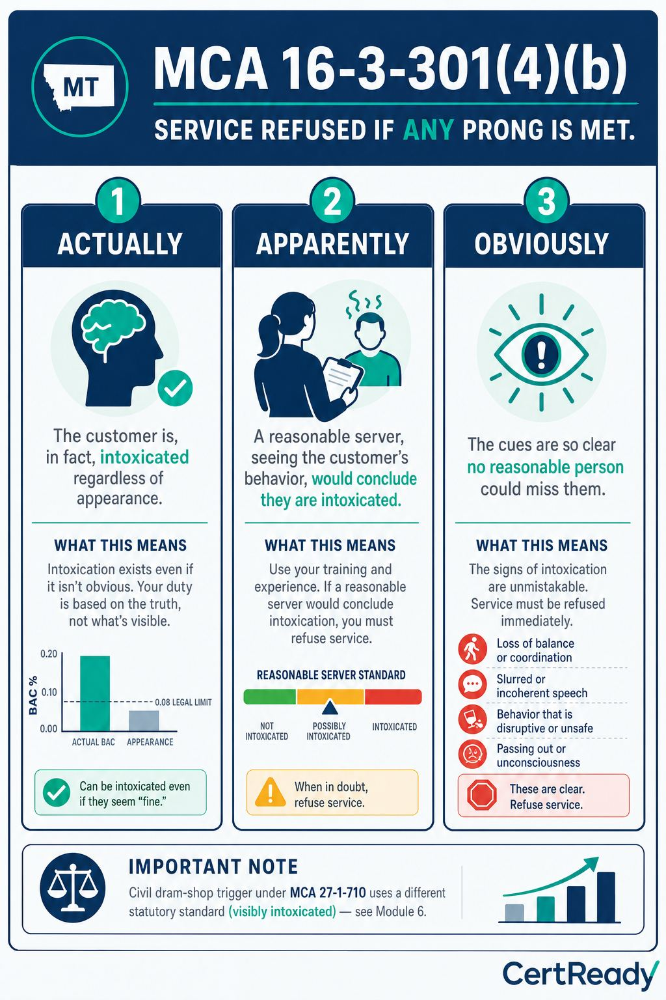
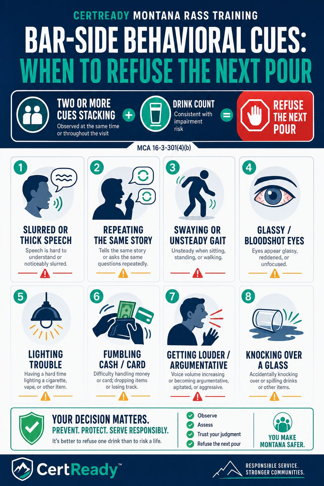
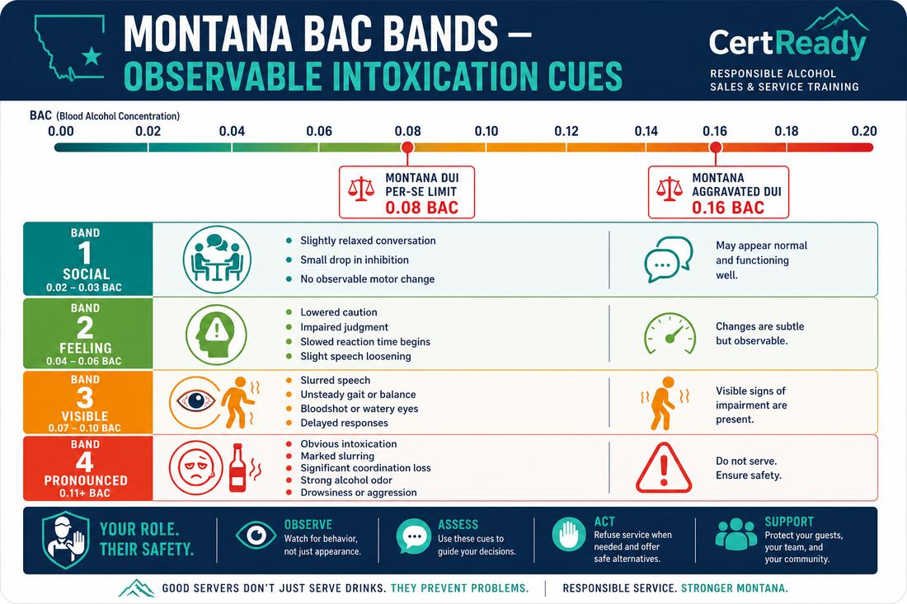

Module 03: Recognizing Intoxication and Refusing Service
Montana's 'actually, apparently, or obviously intoxicated' standard and how to refuse cleanly
This page mirrors the student lesson content and infographics so Montana CARD can review it without using the CertReady LMS.
The Montana legal standard
s1-c1 | text
Montana law uses TWO parallel tests for over-service. MCA 16-3-301(4)(b) prohibits selling alcohol to a person who is 'actually, apparently, or obviously intoxicated'
the three-prong phrase. 'Actually' covers a person who really is impaired
even if the signs are subtle. 'Apparently' covers a person who looks impaired to a reasonable observer; this is the standard that applies most often at the bar. 'Obviously' covers the loud, falling-down case that anyone could see from across the room. MCA 16-6-304 is a separate, broader prohibition: it bars selling, serving, or giving an alcoholic beverage to a person who is 'apparently under the influence of alcohol' (a single-prong test). The two statutes work together: refuse if either standard is met.
Outcomes: K4
s1-c2 | callout
MCA 16-3-301(4)(b) (paraphrase, statutory phrase verbatim): Montana law prohibits selling or giving alcoholic beverages to "any person actually, apparently, or obviously intoxicated" - the bracketed three-prong phrase is the statute's exact operative language.

MT ALCOHOL M03 s1 c2
Outcomes: K4
s1-c3 | text
Practical translation. If you have any reasonable belief the person is impaired, the law treats that as enough. You do not need a breathalyzer. You do not need a confession. The 'apparent' test is your professional judgment based on what the person is doing in front of you. The reason Montana wrote the standard this way is to give servers cover when they make the call: a court will not require you to prove a customer's exact BAC before refusing a pour. The standard is what a reasonable server would conclude.
Outcomes: K4
s1-c4 | callout
Why the dual-statute approach matters. MCA 16-3-301(4)(b) gives the three-prong service-side test ('actually, apparently, or obviously intoxicated'). MCA 16-6-304 adds a separate, broader prohibition using a single-prong test ('apparently under the influence of alcohol'). The three-prong test asks a server to refuse not only on visible cues but also on what the server actually knows about the customer (e.g., the third double in 20 minutes); the single-prong test in 16-6-304 catches anyone who appears under the influence to a reasonable observer. Tolerance does not change either standard. *Note: Montana's civil dram-shop trigger under MCA 27-1-710 uses yet a third statutory phrase
'visibly intoxicated' plus 'knew or should have known'
covered in Module 6.*
Outcomes: K4
Behavioral and physical signs
s2-c1 | text
BAC translates to behavior in roughly predictable bands. Module 2 covered the BAC physiology; here we tie it to what you actually see across the bar. The cues below are drawn from NHTSA driving-impairment research and the TIPS curriculum that most server-training programs use as a baseline. You don't need to estimate exact BAC. You need to recognize the cluster of cues that puts a customer into the 0.08+ range
the legal-impairment line
so you can stop pouring before the bar is on the hook.
Outcomes: K4, P1
s2-c2 | list

MT ALCOHOL M03 s2 c2
Outcomes: K4, P1
s2-c3 | list
Outcomes: K4, P1
s2-c4 | callout
One sign isn't enough; a pattern is. A single bloodshot eye could be allergies. A loud laugh could be enthusiasm. The Montana 'apparent' standard is met when several cues stack: slurred speech AND unsteady walk, or loss of inhibition AND glassy eyes AND repetitive talking. Train yourself to look for the cluster, not the single tell.
Outcomes: K4
s2-c5 | list
Outcomes: P1
s2-c6 | callout
Tolerance hides the visible cues, not the impairment.
A regular at 0.18 BAC may show none of the slurring, stumbling, or eye-glassiness.
Their motor cortex has trained around the alcohol
the surface signs disappear.
Their judgment, reaction time, and impairment are still compromised at the same BAC.
If you poured 6+ standard drinks into a 200 lb customer in 2 hours, the BAC math is fixed
regardless of how steady their walk looks. For service decisions, do not rely on "he looks fine" if drink count, pace, or behavior suggests impairment. (Civil dram-shop liability has its own statutory triggers under MCA 27-1-710
covered in Module 6.)
Outcomes: K4
The customer who arrives already drunk
s3-c1 | text
Not every over-service problem starts at your bar. A customer who walked in from another establishment, a wedding reception, or a private party may already be in the 0.13-0.20 band before they order their first drink from you. Montana law (MCA 16-3-301(4)(b)) does not require you to know they drank elsewhere. It just requires you not to serve them while they meet the actual / apparent / obvious standard. Showing up impaired is on them; pouring the next drink is on you.
Outcomes: K4, P1
s3-c2 | callout
The bar-hopping reality. A bachelor party, a sports-team celebration, or a wedding reception will often arrive at your bar after 60-120 minutes of drinking elsewhere. Posture-check the group as they walk in: are anyone's eyes already glassy, anyone unsteady, anyone overly loud? The first 90 seconds at the door are the cleanest moment to refuse. Once you've poured a round, refusing the second is harder. Train your hostess and door staff to flag the group to the bartender before drinks land.
Outcomes: P6
s3-c3 | text
Refusing the first drink. Refusing someone who has not ordered yet feels weirder than refusing a fourth pint. Use simple language: "I'm not going to be able to serve you alcohol tonight, but the kitchen's open and water's on me." The tone is neutral. You're not making a moral judgment, you're describing what's going to happen. If they push back, the answer is the same: "Tonight isn't going to work for alcohol - kitchen's open, water's on me." Repeat. Do not get drawn into a debate about how much they've had elsewhere.
Outcomes: P6
Intervention before refusal
s4-c1 | text
Refusing service is the last step in a chain of choices. Before you cut someone off, you have several intervention tools that often work. Most customers respond well to friendly slowdowns when they feel the bartender is looking out for them rather than judging them. The intervention ladder below is the standard TIPS / ServSafe Alcohol model with Montana-specific tweaks.
Outcomes: P6
s4-c2 | list
Outcomes: P6
s4-c3 | text
Reading the room before you escalate. Before stepping up the ladder, take 30 seconds to gauge the rest of the table. Are friends signaling concern? Is the customer in a celebratory or a self-medicating mood? Are there kids nearby? Is the manager available if things turn? The right step on the ladder depends on the social context, not just the BAC. A wedding party that's having a good time responds well to step 1 (slow down) and step 3 (food). A grieving solo customer at the bar may need step 4 (clean refusal) immediately, with the manager on standby.
Outcomes: P6
s4-c4 | list
Outcomes: P6
s4-c5 | text
The 30-second rule. When you decide to intervene, do it within 30 seconds of the trigger moment. A delay of even a minute makes it harder: the customer's tab grows, neighboring customers get drawn into the situation, and you start second-guessing yourself. The intervention is most effective when it's fast and conversational. The customer barely notices it's happening
they just notice that you set down a water glass and never came back for the next drink order. That's the goal. The 'I' frame. Lead with "I" not "you." "I'm going to slow down on that next pour" lands far better than "You shouldn't have another one." The 'I' frame keeps the customer's ego out of it; the 'you' frame puts it center stage. Same outcome, very different reception. The 'we' frame for groups. If the customer is in a group and the group is also drinking, address the group: "Let me get you all some water and the menu
I've got a great post-drinking dessert tonight." The customer who's over-served gets the same de-escalation without being singled out. Groups self-regulate when you give them a reason to.
Outcomes: P6
Refusing cleanly
s5-c1 | scenario
What is the right next step?
Scenario 1: The friendly regular. A regular customer at the bar is on her fourth pint of a 7% Montana craft pale ale (so about 5.6 standard drinks over 2 hours). She's slurring slightly, getting louder, and asking for a fifth. She has a tab open. She is friendly with you. She catches your eye and smiles.
Options
a. Pour the fifth. She's a regular and you don't want to embarrass her.
b. Lean in and quietly say: 'I'm going to switch you to water for a bit. I've got you. Can I bring some bread?'
c. Tell her loudly across the bar: 'You're cut off!'
d. Pretend you didn't hear and walk away.
Outcomes: P6, K4
s5-c2 | list
Outcomes: P6
s5-c3 | scenario
What's the right call?
Scenario 2: The friend trying to order around the cut-off. You've just cut off a customer at a four-top. One of his friends slides up to the bar and orders "another round for the table" with the cut-off customer's drink included. She doesn't make eye contact and slides her credit card across.
Options
a. Pour the round. She's the one ordering, not him.
b. Pour drinks for everyone except the cut-off customer. "I can serve the table - minus your friend who's switched to water."
c. Pour the round but tell her to drink it herself. "I served you, what you do with it is your problem."
d. Refuse the entire round and ask the table to leave.
Outcomes: P6, K4
s5-c4 | scenario
What's the right call?
Scenario 3: The customer who got angry. You've just refused a fifth pour to a 240-pound male customer. He stands up, leans toward you, and says loudly, 'Are you serious? I'm fine. Pour the damn drink.' Other customers at the bar are watching.
Options
a. Pour the drink to defuse the situation.
b. Stay calm, keep your voice low. 'I hear you. I'm still going to switch you to water tonight. Want me to grab the manager so you can talk to her?' Signal the manager with your eyes.
c. Tell him to get out of the bar.
d. Argue back loudly so other customers see you're right.
Outcomes: P6
s5-c5 | callout
The 911 trigger. A BAC above 0.30 is a medical emergency, not a service problem. Signs that put a customer in this band:
Unable to stay upright
Semi-conscious or unresponsive
Slow or shallow breathing
Blue-tinged lips
Vomiting while semi-conscious The right call is 911. NOT:
A Lyft home
"Sleeping it off" in a booth or the parking lot
Walking them outside for fresh air The risk doesn't necessarily end when the customer leaves. If the bar furnished alcohol in a way that meets one of MCA 27-1-710's statutory triggers, a later injury or death can still lead to a dram-shop claim.
Outcomes: P6
Documenting refusals and incidents
s6-c1 | callout
Document the refusal. Most house policies require an incident-log entry every time you refuse service or have to escalate. The log creates the paper trail that protects the licensee under MCA 27-1-710 if there is ever a dram-shop claim. A refusal you didn't write down is, for litigation purposes, a refusal that didn't happen.
Outcomes: P6
s6-c2 | list
Outcomes: P6
s6-c3 | text
How the log saves the bar. Within 180 days of the alleged sale or service, a plaintiff's lawyer may send certified-mail notice of a dram-shop claim under MCA 27-1-710. The notice will name the bar, name the customer, and allege over-service on a specific date - and may ask for the incident log, training records, surveillance video, and receipts from that night.
Outcomes: P6
s6-c4 | list
Outcomes: P6
Behavioral cues, eye signs, and the BAC-band timeline a Montana server should know cold
s9-c1 | text
The BAC bands and what they look like at the bar. A 0.02-0.03 BAC band is the 'social loosening' band
slightly relaxed conversation, a small drop in inhibition, no observable motor change. A 0.04-0.06 band is the 'feeling it' band
louder, friendlier, slight reduction in fine motor control (the pour-cup-to-mouth motion gets a little less precise). A 0.07-0.10 band is the 'visible impairment' band
slurred speech is now apparent to a sober observer, balance becomes noticeably affected, judgment is measurably worse. Above 0.10 the cluster gets unmistakable: pronounced slurring, swaying, glassy and bloodshot eyes, difficulty completing basic motor tasks like counting cash or unlocking a phone screen. Montana's apparent-intoxication standard under MCA 16-3-301(4)(b) and MCA 16-6-304 is calibrated to the 0.07-and-above bands
a server who can describe two or three cues from those bands has met the legal standard for refusal. The 0.02-0.06 bands are not, by themselves, refusal-triggering, but they are the bands where the slowing-service playbook from Module 2 should be deployed: water, food, slower pour, smaller portions. The goal is to keep the table from crossing into the 0.07+ band where refusal becomes mandatory.

MT ALCOHOL M03 s9 c1
Outcomes: K4, P1
s9-c2 | callout
**Eye signs
the cluster that's hard for a customer to hide. Behavioral cues like slurring and swaying are what most servers learn to spot first, but eye signs are the cluster most resistant to a practiced 'I'm fine' performance. Three to watch for at the bar: (1) horizontal gaze nystagmus**
when the customer tracks your finger from side to side at arm's length, the eyes jerk involuntarily once they cross about 45° from center. The jerking gets more pronounced with rising BAC. (2) Lack of convergence
ask the customer to focus on the tip of a pen brought slowly toward the bridge of their nose; at 0.08+ many drinkers can't bring both eyes to converge on the close point. (3) Bloodshot or glassy appearance with pupil sluggishness
pupils slow to constrict against the bar's overhead lighting, and the white of the eye reddens. Servers should not perform any of these tests on a customer; they are observations to make passively as the customer presents themselves at the bar. Mentioning them on a refusal log strengthens the contemporaneous-observation record substantially: 'eyes bloodshot, slow pupil response, did not track when paying tab' is a much stronger record than 'looked drunk.'
Outcomes: K4, P1
s9-c3 | text
The 'rate-of-rise' tell. A customer's BAC doesn't move at the same rate all night. The first drink hits absorption fastest on an empty stomach; subsequent drinks against partially-digested food absorb more slowly. What this means at the bar: the customer who looks 'fine' at the 90-minute mark may be at a much higher BAC than they were 30 minutes earlier, because alcohol consumed earlier is still being absorbed even after they stop ordering. Servers who treat a customer's apparent state as a flat reading miss the curve. Two practical implications: (1) Last call doesn't end the BAC rise
a customer who ordered their last drink at 1:55 AM may be at peak BAC at 2:30 AM, well after they've left the bar. (2) The 'they seem okay so I'll pour one more' decision often produces the catastrophic case
the BAC curve from that one more drink rises for 30-45 minutes after consumption, often after the customer has left the premises. The cleanest discipline is to refuse two rounds before the curve crests, not at the crest. The refusal log entry from that proactive refusal is also the most defensible artifact under MCA 27-1-710's three-trigger framework: 'visible intoxication at the time of service' is a backward-looking standard, and a refusal entered while the customer is still inside the bar locks in your observation in real time.
Outcomes: K4, P6
Module 3 Quiz
Passing score: 80%
q1 | multiple_choice
Which phrase does Montana law (MCA 16-3-301(4)(b)) use as the over-service test?
Options
a. 'Visibly intoxicated' only
b. 'Actually, apparently, or obviously intoxicated' Correct
c. 'Unable to consent'
d. 'BAC over 0.08'
Correct answer: b. 'Actually, apparently, or obviously intoxicated'
Outcomes: K4
q2 | multiple_choice
A regular customer at 0.18 BAC has 'trained' herself not to slur. Under Montana's three-prong standard, can you serve her?
Options
a. Yes, because the 'apparent' prong isn't met
b. No - she's 'actually' intoxicated even if not visibly Correct
c. Yes, because she's a regular and tolerance is a defense
d. Only if she signs a liability waiver
Correct answer: b. No - she's 'actually' intoxicated even if not visibly
Outcomes: K4
q3 | multiple_choice
Which is NOT typically a behavioral cue of intoxication?
Options
a. Slurred speech
b. Repeating the same story
c. Asking for a glass of water Correct
d. Loud, overly familiar behavior
Correct answer: c. Asking for a glass of water
Outcomes: P1
q4 | multiple_choice
What is the FIRST step on the intervention ladder, before refusal?
Options
a. Slow down the next pour or check-back Correct
b. Call the police
c. Throw them out
d. Refuse to make eye contact
Correct answer: a. Slow down the next pour or check-back
Outcomes: P6
q5 | multiple_choice
You've cut off a customer. His friend slides up and orders a round 'for the table' that includes the cut-off customer's beer. What's the right call?
Options
a. Pour the round - she's the one ordering and paying
b. Pour drinks for everyone except the cut-off customer; substitute water Correct
c. Refuse the entire round and ask the table to leave
d. Pour the round but tell her not to share
Correct answer: b. Pour drinks for everyone except the cut-off customer; substitute water
Outcomes: P6, K4
q6 | multiple_choice
A customer becomes semi-conscious at the bar with slow, shallow breathing and bluish lips. What's the right call?
Options
a. Call them a Lyft and send them home
b. Let them sleep it off in a booth
c. Call 911 - this is a medical emergency Correct
d. Walk them to the parking lot for fresh air
Correct answer: c. Call 911 - this is a medical emergency
Outcomes: P6
q7 | short_answer
Write a one-line refusal script you would use on a regular customer who has had too much, in a way that lets them save face.